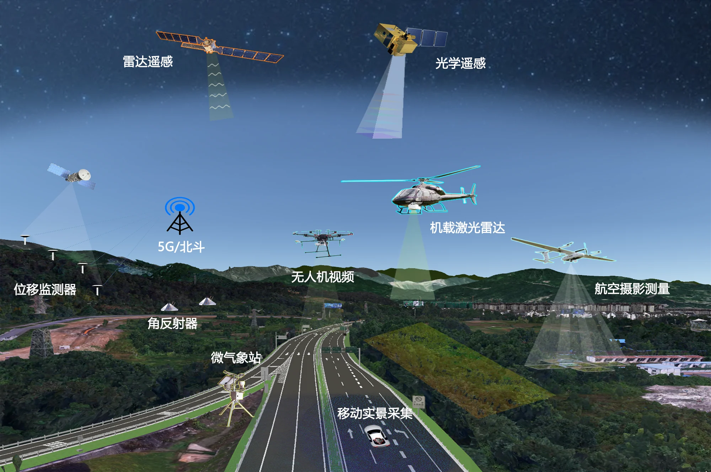
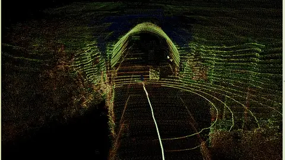
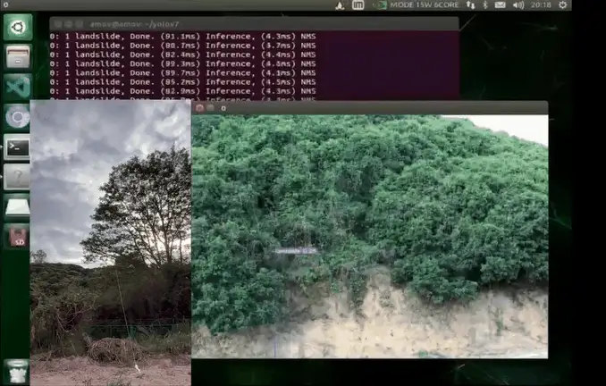
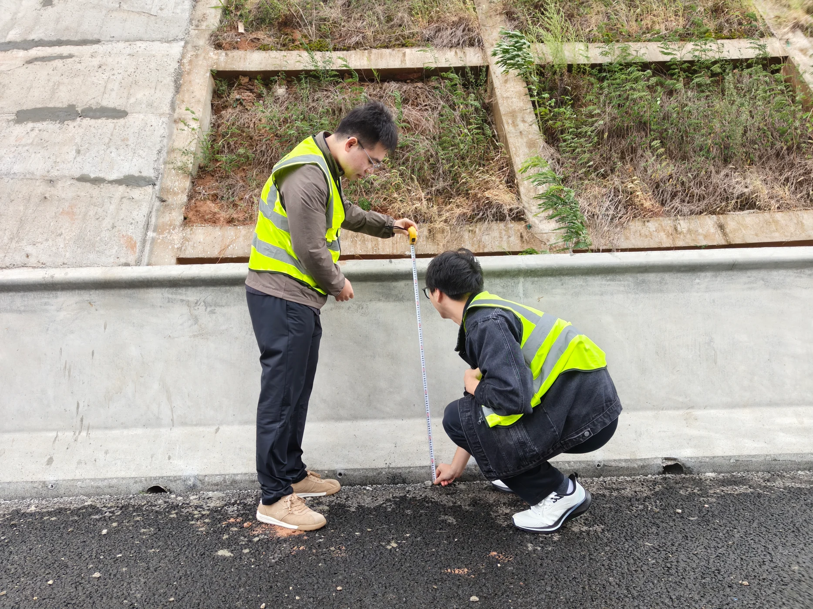
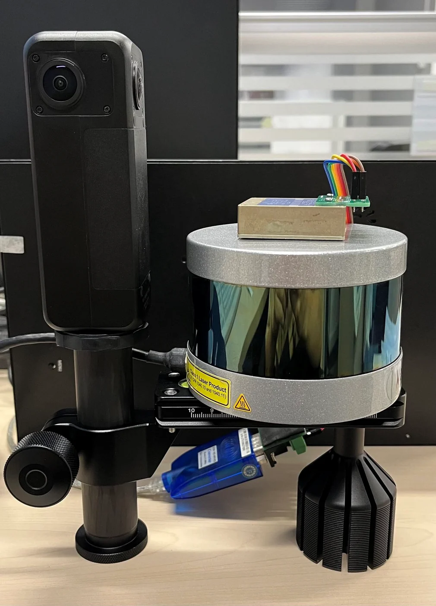
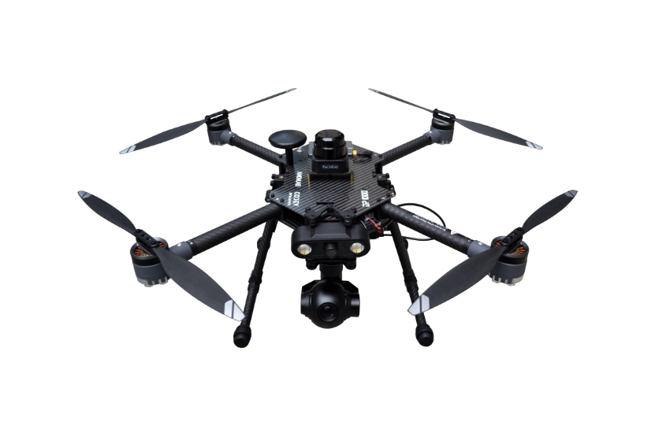
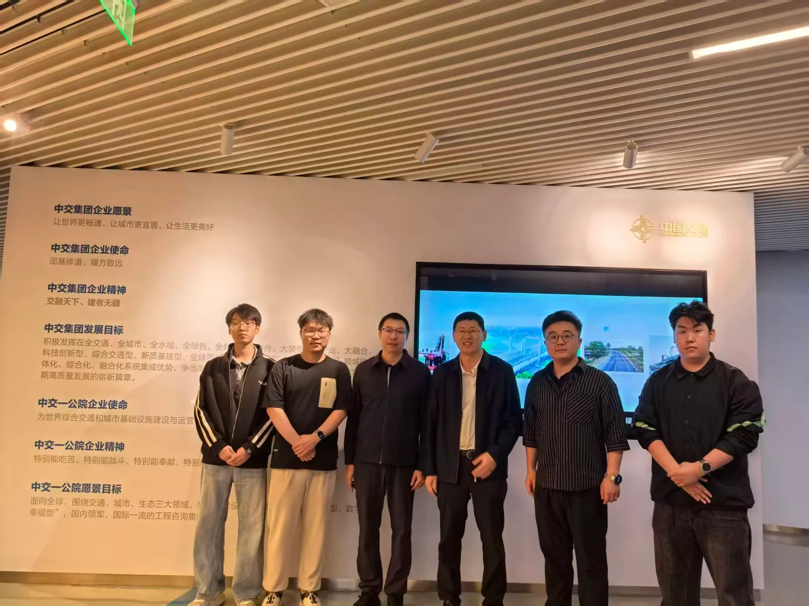

01
DATA MANAGEMENT
多源数据
统一管理
集中接入卫星、无人机、移动采集、事故记录和设计资料，按区域与任务统一组织。




DATA STREAM多源协同采集
EQUIPMENT / 01
多传感器集成
激光雷达、惯导、全景相机。

EQUIPMENT / 02
无人机侦测
快速抵达，广域巡查。

FIELD / LONG-TERM
持续在场
现场采集、资料归档、周期更新。
